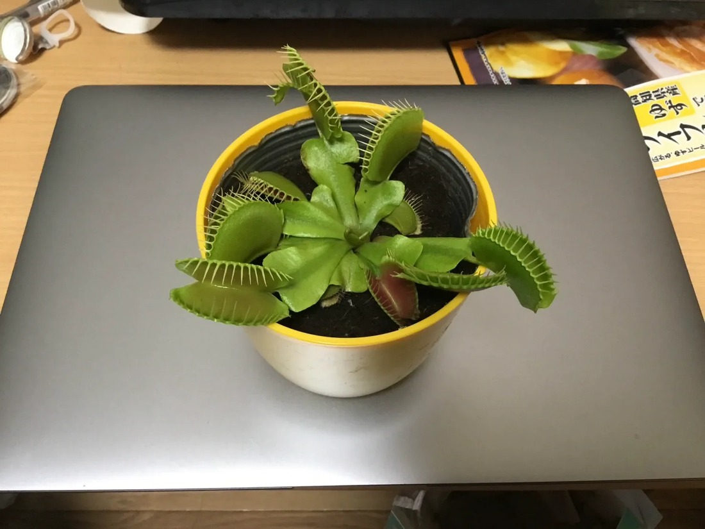
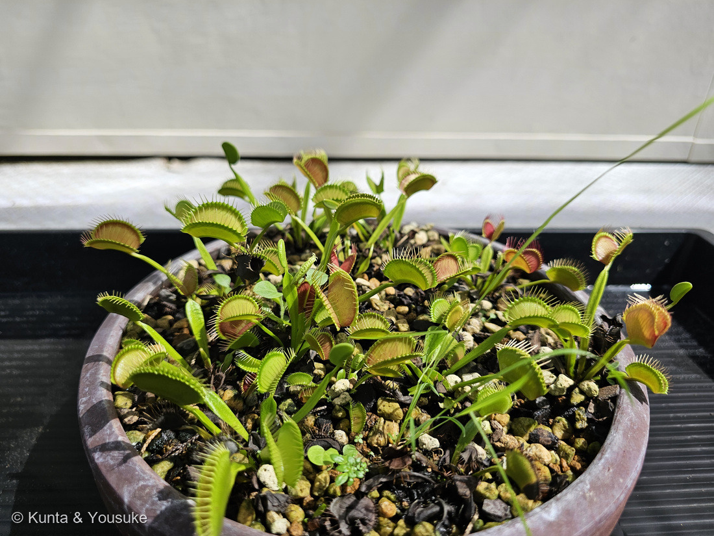
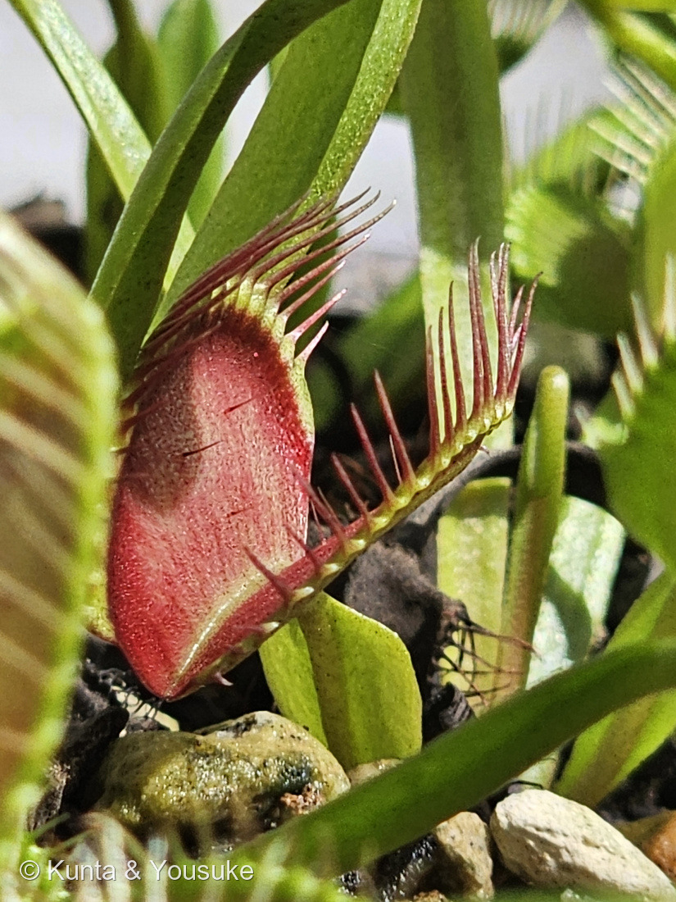
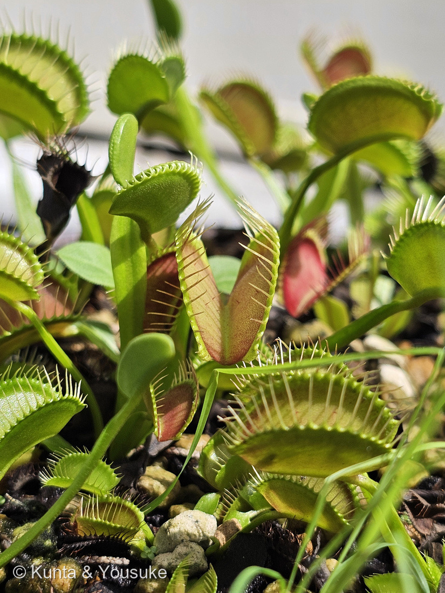

地図を読み込んでいるよ…
🔍 写真も地図も、押しているあいだ拡大して見られるよ（スマホは指を置いてすこし待ってね）。
🌍 の地図＝この子がもともと自生している場所を緑に。北アメリカ（アメリカ南東部・ノースカロライナ／サウスカロライナの湿地）に固有。
⭐北アメリカ（アメリカ南東部）が原産——ハエトリソウはアメリカのノースカロライナ／サウスカロライナの、ごく限られた酸性の湿地にだけ自生する食虫植物だよ。⚠日本は塗っていない——観賞用に育てられている外来の植物（りょうさんのお部屋の鉢）。⚠地図は国ごと塗っているけど、ほんとうの自生地はアメリカ南東部のごく狭い一帯だけで、野生ではとても貴重なんだ。
⚠ 地図は国（日本と中国だけ県・省）までしか塗れないから、ほんとうの分布より広く見えていることがあるよ。地図はだいたいの場所。正確なところは、上の文を見てね。
ハエトリソウ（蝿捕草）
Dionaea muscipula J.Ellis
別名 · ハエトリグサ／ヴィーナスフライトラップ／ 原産 · 北アメリカ南東部／ 見どころ · ⭐図鑑初の食虫植物・「2回」を数える罠・扁平な葉柄・星太郎そっくり第4弾
モウセンゴケ科 · Droseraceae（ハエトリグサ属 Dionaea）── 図鑑初の食虫植物・モウセンゴケ科／016 王冠竜と同じナデシコ目
名前と学名の由来 ── 女神の、ハエ捕り罠
- 和名ハエトリソウ（蝿捕草）／ハエトリグサ＝文字どおり「ハエを捕る草」。
- ⭐属名 Dionaea（ディオナエア）＝ギリシャ神話の女神ディオーネ（美の女神アフロディーテ＝ヴィーナスの母）。英名 Venus flytrap（ヴィーナスの蝿取り） も、この女神つながり。muscipula（ムスキプラ）＝ラテン語で「罠・ネズミ捕り」（musca＝ハエ）。合わせて「美の女神の、ハエ捕り罠」。
- ⭐おまけのモウセンゴケと同じ「モウセンゴケ科」。016 王冠竜（サボテン科）と同じナデシコ目の仲間でもあるよ。
この植物のこと ── なぜ、虫を捕るのか
- 北アメリカ・アメリカ南東部の、栄養の少ない酸性の湿地に固有の食虫植物。
- ⭐土に窒素などの養分が少ないから、虫を捕まえて、足りない栄養を補う——これが「食虫」の理由。光合成でエネルギー（糖）は作れるけど、体を作る窒素が土から足りないんだ。
- ⭐⭐葉のつくりが不思議——燻太さんの気づいたとおり：平たい緑の部分＝扁平にひろがった葉柄で、ここが光合成の主役。先端の2枚貝の罠は、葉の先（葉身）が変形したもの。つまり「1枚の葉」が、光合成係と、罠係に分かれている。（季節で葉柄の形＝寝る/立つ、も変わるよ。）
- 罠の縁のトゲ（cilia）＝閉じたとき噛み合う「歯／まつげ」、内側の赤い色＝消化腺とアントシアニン。
- ⚠育てるコツ：酸性で栄養の少ない用土（水苔・ピートモス）／腰水でいつも湿らせる／水は雨水や純水（水道水の塩類は苦手）／日光が大好き／肥料はやらない（かえって弱る）。そして——罠にちょっかいを出さない（燻太さんの言うとおり）。
⭐ わなのしくみ ── 「2回」を数える、賢い罠
燻太さんの「一回触っただけだと反応しないらしい。ほんとかな？」——⭐ほんとだよ。 そして、そのしくみがすごいんだ：
- 罠の内側の感覚毛（trigger hair）が曲がると、活動電位（電気信号）が走る。
- 1回では閉じない。20〜30秒以内に2回、刺激が来て、はじめてパチンと閉じる（速いと0.1秒！）。
- ⭐なぜ2回か——信号のたびにカルシウム（Ca²⁺）が上がるけれど、1回目では閾値に届かず、2回目で超えて閉じる。しかも1回目のCa²⁺は時間で減るから、間があきすぎるとリセット＝短期記憶で「2回」を数えている。
- ⭐さらに、閉じたあとも獲物が暴れて刺激が続く（5回以上）と、ジャスモン酸のシグナル→消化酵素の分泌が始まる＝回数で「消化するかどうか」まで決めている（Hedrichら 2016）。
- ⭐意味：雨粒やゴミの“むだ打ち”で閉じないため。閉じるのも開くのも大仕事（1つの罠が閉じられる回数は数回〜十数回で寿命）だから、「2回、本気の獲物」を確かめてから閉じるんだ。
⭐ 星太郎そっくりシリーズ 第4弾
同定について
- 縁に噛み合う刺のある2枚貝の捕虫葉＋内側の感覚毛（左右に3本ずつ）＋扁平な葉柄——これで、ハエトリソウ（Dionaea muscipula）で確定。
- ほかの食虫植物との見分け：おまけのモウセンゴケ（同じ科・粘着式＝ねばねばの毛でくっつける）／217 ウツボカズラ（落とし穴式の袋）／サラセニア（筒式）。ハエトリソウは、この中で唯一の「挟み込み式（スナップtrap）」だよ。
⭐⭐⭐ 追記 ── 広島市植物公園のハエトリソウ（2026.08.09）



⭐ 2026年8月8日、広島市植物公園で。⚠①のりょうさんの株とは別の株だよ（055 イチジクのときと同じ書き方だね）。
⭐⭐ 燻太さんが、この写真から三つ見つけてくれた。順番に答えるね。
① 「この子は内側が本物のお口のように赤いね」
- ⭐⭐⭐あの赤はアントシアニンだよ。——英語版Wikipediaは「The upper surface of these lobes contains red anthocyanin pigments and its edges secrete mucilage.（この二枚の葉の上側の面には赤いアントシアニン色素があり、ふちからは粘液が出る）」と書いている。
- ⭐⭐アントシアニンは、この図鑑ではおなじみの色素。——🎨 色でつながる・アントシアニンの小道に、この子も加わったよ。⭐紅葉も、赤いシソも、ブルーベリーも、そしてこの「お口」も、同じ色素の仲間なんだ。
- ⭐「本物のお口のよう」という燻太さんの言い方、ぼくは好きだな。——⚠でも、この赤が虫を誘っているのかどうかは、ぼくの読めた出典には書いてなかった。⭐わからないことは、わからないままにしておくね。
② 「よくそだった葉っぱほど赤くなるのかな？」
- ⭐⭐写真②と④を見ると、燻太さんの言うとおりに見える。——大きくひらいた罠ほど内側が赤く、まだ小さい若い罠は全体が黄緑色。
- ⚠でも、ぼくには二つの理由が分けられないんだ。——「よく育ったから赤い」のか、「よく日に当たったから赤い」のか。⭐写真②では、赤い罠は鉢の外側や上のほうにあって、緑の罠は中央や下にある——⭐⭐つまり「大きい罠」と「日のよく当たる罠」が、同じ場所にいるんだよ。
- ⭐ひとつ、確かなことはある。——英語版Wikipediaは、ハエトリソウの葉のかたちが日長と光の強さ（photoperiod and light intensity）でちがってくる、と書いている。⭐光が姿を決めているのは、まちがいない子なんだ。
- ⚠「赤くなるのは光のせい」とはっきり書いた出典には、ぼくは当たれなかった。⏳だから、これは宿題にしよう——⭐うちで育てるなら、同じ株の日なた側と日かげ側をくらべるのが、いちばんはっきりする実験だと思う。
③ 「3本のトゲも、はっきりわかるね」
- ⭐⭐⭐⭐燻太さん、それトゲじゃないんだ。——あれが、このページの上のほうに書いた感覚毛（trigger hair）だよ。
- ⭐⭐英語版Wikipediaは「the three hair-like trichomes that are found on the upper surface of each of the lobes（二枚の葉のそれぞれの上面にある、3本の毛のような突起）」と書いている。⭐片側に3本、だから左右で6本。
- ⭐⭐⭐そして、このページの「同定について」に、ぼくはこう書いていたんだ：「内側の感覚毛（左右に3本ずつ）」。⭐その3本を、燻太さんが写真③で見つけてくれた。
- ⭐⭐⭐⭐この3本が、あの「2回を数える」しくみの受信機。——1本が2回でも、2本が1回ずつでもいい。とにかく20秒以内に2回触られたときだけ、罠が閉じる。⭐雨やゴミのむだ打ちで大事なエネルギーを使わないように、ちゃんと数えてから動く。
- ⭐ふちに櫛のように並んでいる長いほうが、本当のトゲ（正確には歯）。⭐⭐閉じたときに噛み合って、格子の檻になるほうだね。⚠だから写真③には、まったく役目のちがう二種類の突起が写っているんだ——ふちの長いのが檻、内側の細い3本がスイッチ。
参考：Wikipedia「ハエトリグサ」（モウセンゴケ科・北米南東部固有の食虫植物／感覚毛への2回の刺激で閉じる・活動電位／扁平な葉柄と変形した葉身の罠）。「数える」しくみ＝Böhm/Hedrichら 2016（Current Biology）ほか発生・電気生理の知見をもとに整理。／Wikipedia (English)・Venus flytrap（The upper surface of these lobes contains red anthocyanin pigments and its edges secrete mucilage.／The trapping mechanism is tripped when prey contacts one of the three hair-like trichomes that are found on the upper surface of each of the lobes.／the leaf form is influenced by photoperiod and light intensity）